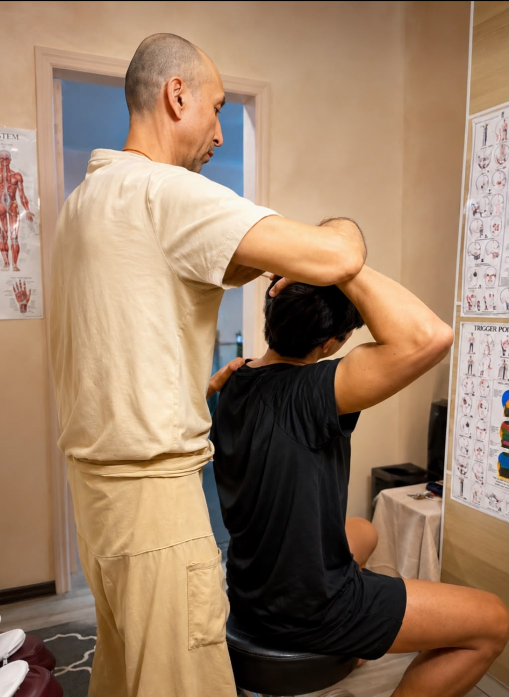
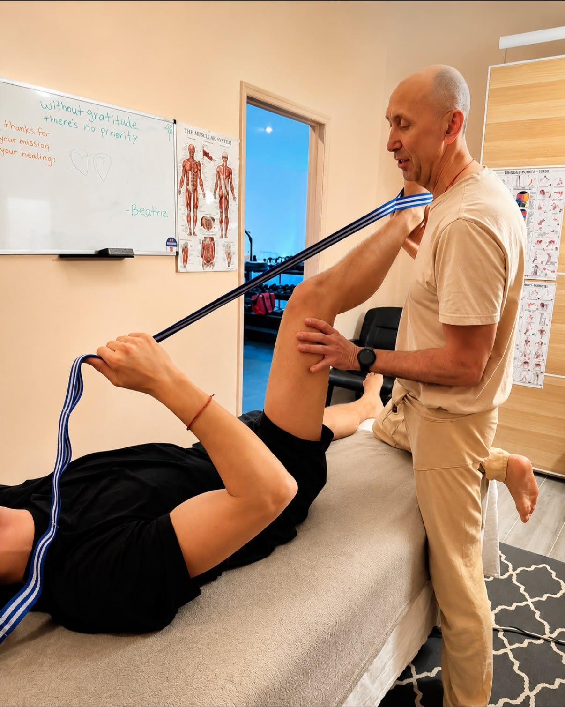
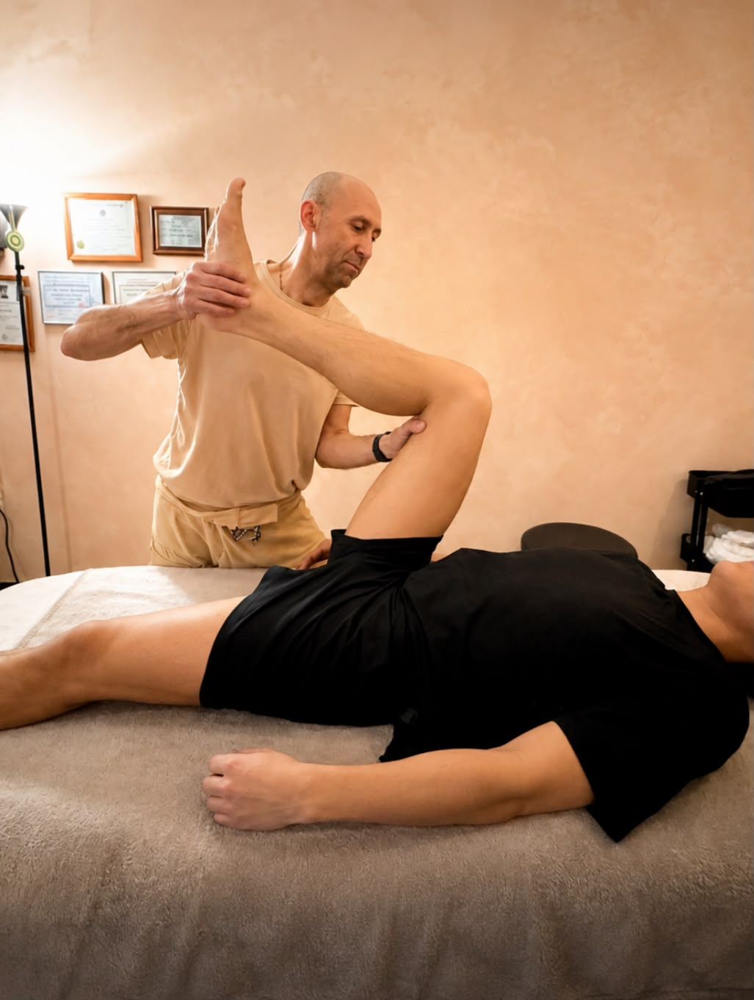

Experts estimate that the vast majority of physical injuries trace back to the same three preventable factors — all of which AIS directly addresses.
Accumulated physical and neuromuscular fatigue impairs coordination, reduces reaction time, and leaves tissues vulnerable to stress beyond their capacity. Recovery through targeted stretching restores tissue resilience.
Chronic hypertonicity restricts blood flow and oxygen delivery to muscle tissue, creating a cycle of tension, pain, and compensatory movement patterns that increase injury risk with every repetition.
Reduced range of motion forces joints and surrounding soft tissue to absorb forces they were never designed to handle alone. Systematic flexibility work rebuilds the body's natural shock-absorption capacity.
For decades, holding a stretch for 60 seconds was considered the gold standard. New research — and a deeper understanding of physiology — tells a very different story.
Imágenes de sesiones, técnicas y resultados reales.


